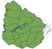
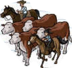
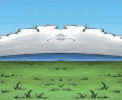

Lee estos apuntes que luego te servirán para escribir sobre las praderas del Uruguay.

Vegetación
La vegetación de la pradera está compuesta por gramíneas, leguminosas y arbustos, como por ejemplo, la chirca.

Actividades económicas
En Uruguay la pradera natural ocupa el 80 % del territorio. Por este motivo, las actividades agropecuarias constituyen el principal rubro productivo del país.

Clima
Las praderas se caracterizan por tener temperaturas promedio de 15 °C y precipitaciones de entre 500 y 1000 mm.